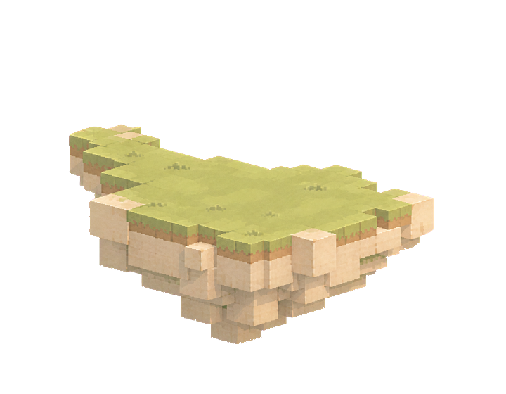
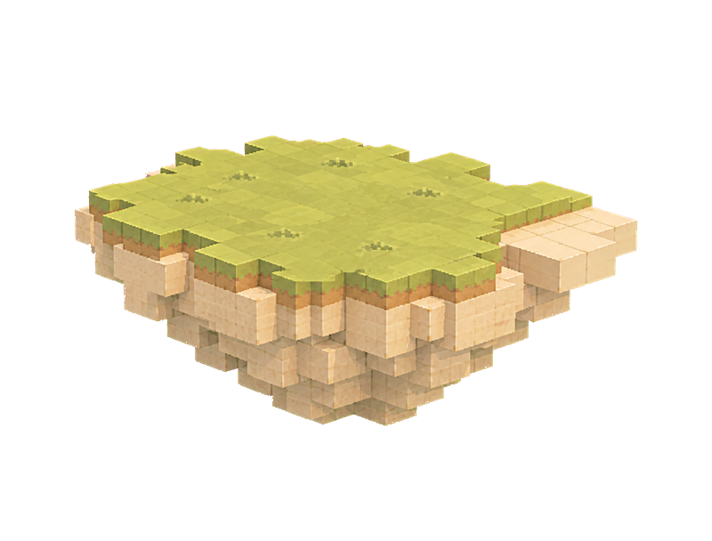
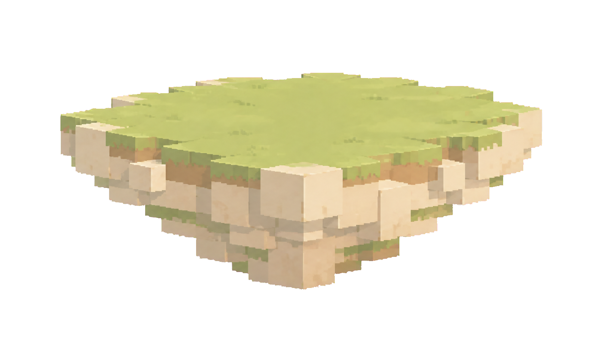
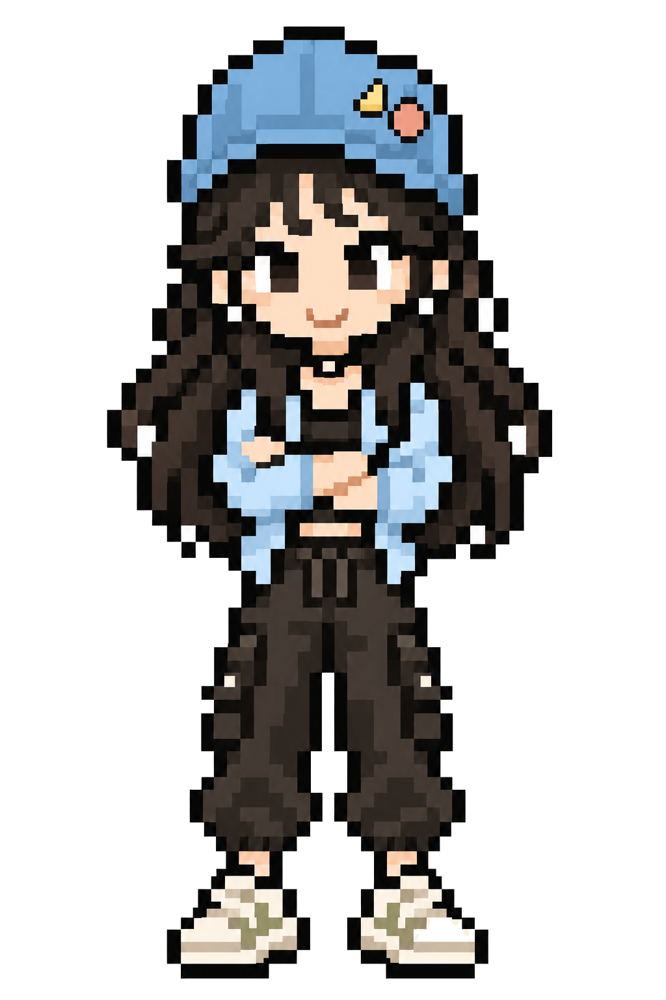

单图透明边缘
同一文件分别放在浅色、深色和棋盘格背景上，检查透明区、边缘残色与主体完整性。
左环境岛
右环境岛
1440×900 Hero 组合检查
人物通过独立文件引用，仅用于核对站立关系和构图，不会合并进浮岛图片。




左岛：bottom left / z 4
右岛：bottom right / z 4
中央岛：bottom center / z 5
人物：独立图层 / z 10